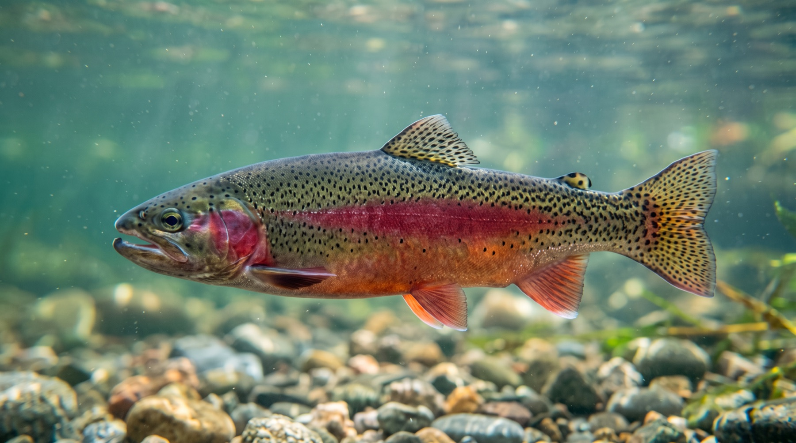
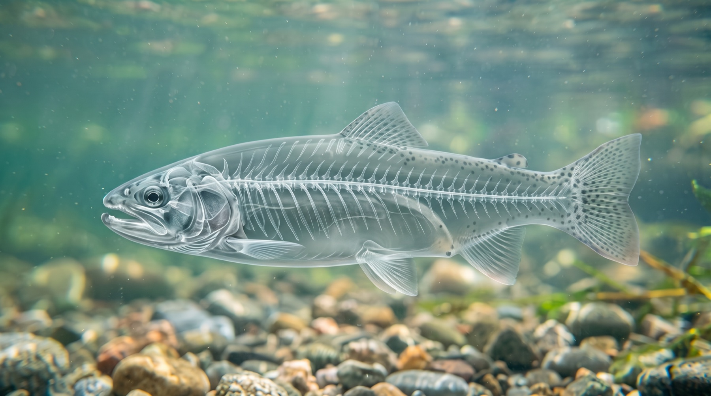

01 Intact
Rainbow Trout.
A spawning male holding in current. Everything that follows is the same photograph, opened up a layer at a time.
02 Skeleton
Through the body.
Skin and muscle turn to glass. The skull, the vertebral column and the fine rib bones carry the shape from the inside.
03 Nervous system
The wiring lights up.
Brain, spinal cord, cranial nerves, the segmental nerves stacked down the body, and the lateral line the fish reads moving water with.
04 Separated
Coming apart.
The nervous system lifts clear of the body it was threaded through — one continuous structure, from the brain to the last nerve in the tail.
Scroll ↓
01 How it works
Four plates share one camera and one crop. Because nothing shifts between them, the stack can cross-fade in place and read as a single fish opening up, rather than as four pictures taking turns. Registration is the whole trick; without it the illusion collapses immediately.
The section is a tall scroll runway with one viewport-sized frame pinned for its full length. Scrolling produces a single number between 0 and 1, and every layer derives its own opacity and offset from that one value, so the stack can never disagree with itself or with the captions.
The last stage is a real 3D orbit, and it only works because the nervous system is not a picture. The glow plate is cut to alpha and repeated thirteen times through a hundred pixels of depth, so where the plates overlap their alpha accumulates: the cord and brain build into solid cores, the fine filaments stay wispy, and the whole thing gains thickness the camera can travel around.
The photographs cannot do that — they are flat, and past about fifteen degrees a flat plate stops looking like a fish and starts looking like a card. So they retire before the wide swing begins: a restrained drift while they carry the frame, then the camera opens out to forty-odd degrees once only the volume is left. A small lean toward the pointer runs underneath the whole thing.
anime.js does the animating: animate() with
stagger() brings this text in, and its utils carry the ramps
and mapping behind every layer. Scroll position itself is measured straight off the
runway rather than through onScroll(), whose sync scrubbing did not report
reliably here and is not something a centrepiece should depend on. The nerve plate
began as glow on black; its luminance was baked into an alpha channel instead, because
a blend mode does not survive being nested inside a 3D context and the volume needed
one.
02 Notes
- Animation
- anime.js 4.5.0 / vendored / no build step
- Driver
- measured runway / damped follow / one value
- Camera
- preserve-3d / 46° orbit / pointer lean
- Volume
- 13 alpha slices / 104px depth / accumulated
- Layers
- intact / translucent / nervous system
- Access
- reduced-motion / alt text / idle loop parked